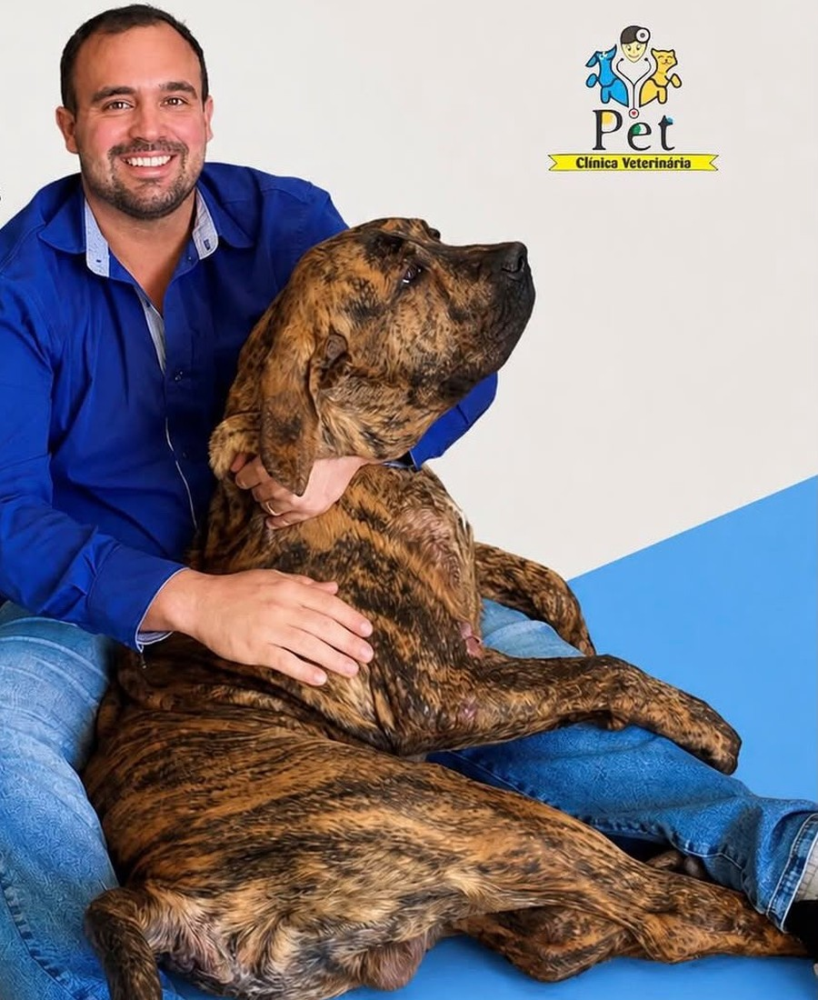
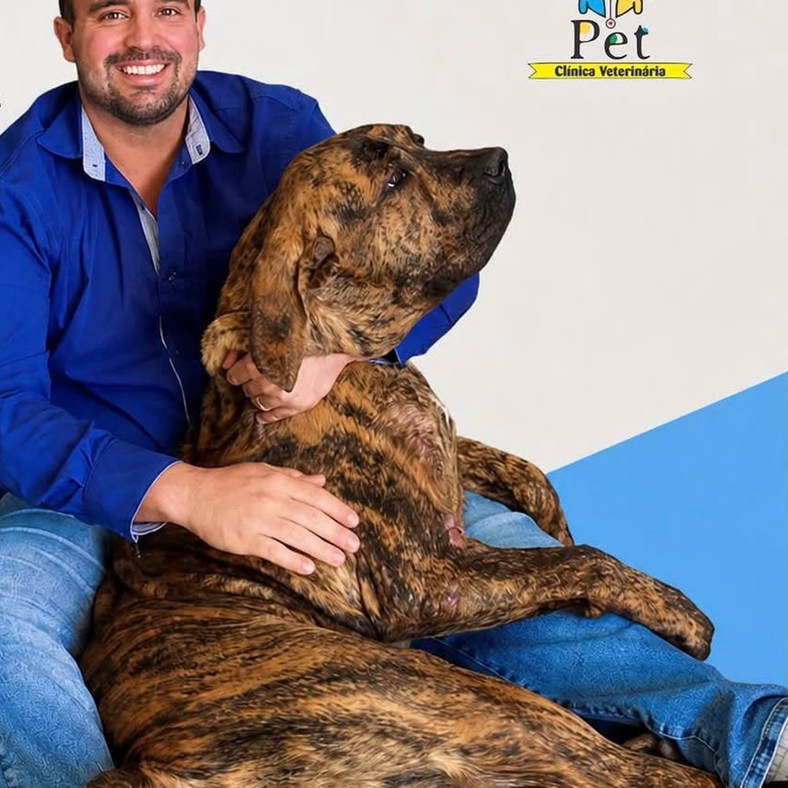
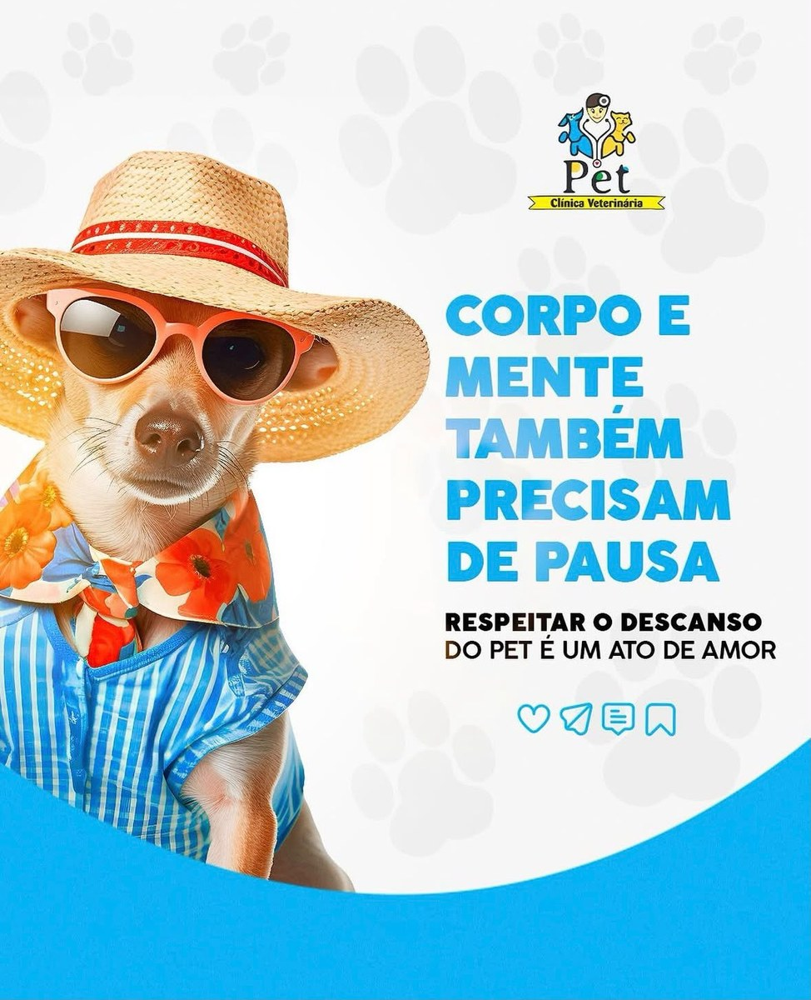
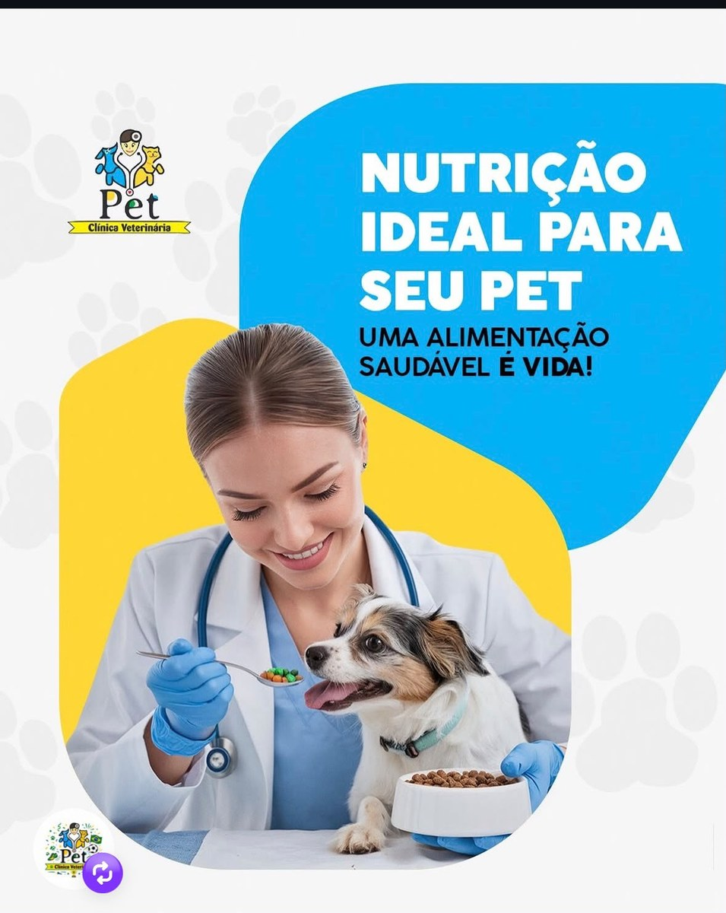

Pós-graduação em Clínica Médica Cirúrgica
Visão integrada para avaliação clínica, acompanhamento pré e pós-operatório e discussão de condutas cirúrgicas quando indicadas.
Veterinária para pets de pequeno e médio porte
A Pet Clínica Veterinária do Dr. Thiago Mello, em São Sebastião do Paraíso - MG, une atendimento clínico cuidadoso, visão cirúrgica e avaliação oncológica responsável para orientar tutores com clareza em cada etapa.
Pós-graduações: Clínica Médica Cirúrgica e Oncologia.
Foco em cães, gatos e pets de pequeno e médio porte.
Contato direto pelo +55 35 8831-0948 para agendamento e triagem inicial.

Sobre o atendimento
O Dr. Thiago Mello atua com uma abordagem que valoriza a anamnese, o exame físico, o histórico do pet e a comunicação clara com a família. A proposta é oferecer um atendimento acolhedor, técnico e responsável para decisões clínicas mais bem orientadas.
Visão integrada para avaliação clínica, acompanhamento pré e pós-operatório e discussão de condutas cirúrgicas quando indicadas.
Atenção a nódulos, massas, alterações suspeitas e orientação sobre investigação diagnóstica com cuidado e responsabilidade.
Serviços veterinários
Os serviços abaixo foram organizados a partir das rotinas comuns de clínica veterinária para pequenos e médios pets. Procedimentos específicos dependem de avaliação profissional, estrutura disponível e indicação clínica.
Anamnese, exame físico, avaliação geral, orientação ao tutor e definição dos próximos passos para cães, gatos e pets de pequeno e médio porte.
Orientação sobre protocolos vacinais, reforços, vermifugação, controle de pulgas e carrapatos e plano preventivo individual.
Solicitação e interpretação de exames de rotina, avaliação anual, exames pré-cirúrgicos e investigação inicial de alterações clínicas.
Curativos, aplicação de medicações, retirada de pontos, coleta de material biológico e cuidados de baixa complexidade quando indicados.
Avaliação clínica, orientação pré-operatória, discussão de riscos, acompanhamento pós-operatório e encaminhamento quando necessário.
Atenção a nódulos, massas cutâneas, perda de peso, dor persistente e sinais que possam exigir investigação diagnóstica especializada.
Orientação nutricional, calendário preventivo, acompanhamento de crescimento, envelhecimento, dor crônica e exames preventivos.
Avaliação de coceira, feridas, queda de pelo, otite, vômitos, diarreia, sintomas urinários, respiratórios e mudanças de comportamento.
Por que escolher
Escuta do tutor e manejo respeitoso para que o pet seja avaliado com mais tranquilidade.
Histórico, sinais clínicos e contexto do animal são considerados antes da orientação de conduta.
Formação voltada para clínica médica cirúrgica e oncologia, com visão ampla do cuidado veterinário.
Explicações objetivas sobre hipóteses, exames, cuidados em casa e acompanhamento recomendado.
Condutas pensadas para conforto, prevenção, controle de dor e qualidade de vida.
Sem garantias irreais: cada caso é avaliado de forma individual e transparente.
Presença e cuidado
As imagens reforçam a comunicação da clínica sobre cuidado, prevenção, orientação ao tutor e atenção ao vínculo entre pets e famílias.



Agendamento
Preencha os dados para iniciar o contato. A equipe poderá chamar pelo WhatsApp para confirmar disponibilidade, entender a necessidade e orientar o melhor horário de atendimento.
Chamar no WhatsApp agoraWhatsApp: +55 35 8831-0948
Endereço: R. Antônio Carlos Pinheiro Alcântara, 275 - Mediterrane 3, São Sebastião do Paraíso - MG, 37950-000
Horários de atendimento: confirmar com a clínica
Atenção aos sinais
Se o seu pet apresenta sinais de dor, apatia, vômitos persistentes, dificuldade para respirar ou mudanças importantes de comportamento, procure atendimento veterinário o quanto antes.
Prova social
Depoimentos ilustrativos para apresentação do site. Substituir por avaliações reais autorizadas antes da publicação.
“Fui atendida com calma e consegui entender melhor o que meu pet precisava. A explicação foi clara e me passou mais segurança.”
Tutora de cão adulto“Gostei da organização no agendamento e da atenção durante a consulta. Saí com orientações simples para seguir em casa.”
Tutor de gata idosa“O atendimento foi acolhedor desde o primeiro contato pelo WhatsApp. Meu pet foi tratado com cuidado e respeito.”
Tutora de filhote“A orientação sobre exames anteriores e próximos passos ajudou bastante. Foi um atendimento direto, humano e responsável.”
Tutor de pet em acompanhamentoDúvidas frequentes
Respostas objetivas ajudam o tutor a tomar decisão com mais segurança e reduzem atrito antes do contato.
A comunicação do site foi pensada para pets de pequeno e médio porte, especialmente cães e gatos. Outros animais devem ser confirmados diretamente com a equipe.
O agendamento pode ser iniciado pelo botão de WhatsApp ou pelo formulário da página. A equipe confirma disponibilidade e orienta o melhor horário.
O Dr. Thiago Mello possui pós-graduação em Oncologia e pode realizar avaliação, orientação inicial e encaminhamentos necessários conforme cada caso.
Sim, quando houver. Exames, receitas, histórico de vacinas e informações sobre tratamentos anteriores ajudam a avaliação veterinária.
Casos cirúrgicos precisam de avaliação, exames quando indicados, orientação sobre riscos e definição de estrutura adequada para o procedimento.
Essa informação deve ser confirmada com a clínica. Para esta demonstração, o fluxo foi pensado com agendamento pelo WhatsApp para reduzir espera e organizar a agenda.
Próximo passo
Agende uma conversa pelo WhatsApp, informe o que está acontecendo com seu pet e confirme o melhor horário de atendimento.